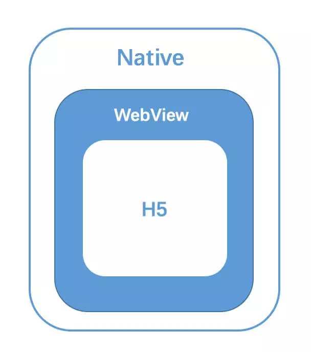
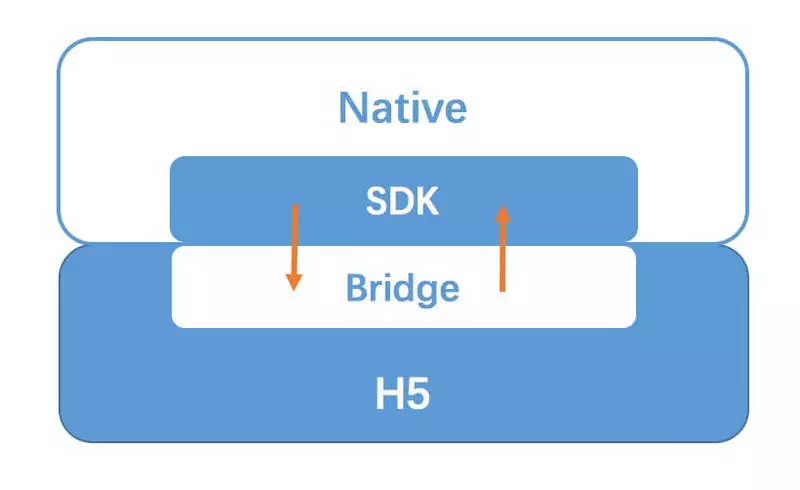

hybird App原理
2018-08-01
现有混合技术
Hybird App，俗称混合应用，即融合了native和web技术进行开发的移动应用。下面三种技术主要在UI渲染机制上不同：
- 基于Webview UI的基础方案。市面上主流，例如微信SDK，通过JsBridge完成H5和Native的双向通讯，从而赋予H5一定的原生能力。
- 基于Native UI的方案，例如React-native、Weex等。在赋予H5原生API能力的基础上，进一步通过JsBridge将js解析成虚拟dom传递到native，并使用原生渲染。
- 小程序方案。通过定制化的JsBridge，使用双Webview和双线程的模式隔离了JS逻辑和UI渲染，形成特殊的开发模式，加强了H5和原生的混合程度，提高了页面性能和开发体验。

Hybird带来的好处
Hybird方案能利用H5强大的开发和迭代能力，又能赋予H5强大的底层能力和用户体验，同时能复用现有的成熟Native组件。
Hybird原理
Hybird App的本质，是在原生App中，使用Webview作为容器直接承载web页面。最核心的点就是Native和H5之间的双向通讯层，其实这里也可以理解为我们需要一套跨语言通讯方案，来完成Native（Java/Objective-c）与JavaScript的通讯。这个方案就是JsBridge。
（一）JavaScript通知Native
基于Webview的机制和开放的API，实现这个功能有三种常见的方案：
- API注入，Native获取JavaScript环境上下文，并直接在上面挂载对象挥着方案，使js可以直接调用，但IOS和Android需要分别挂载。
- Webview中的prompt、console、alert拦截。
- Webview URL Scheme 跳转拦截。但是又限制长度，因此需要制定新的参数传递规则，使用函数调用的方式。原理是，Native可以直接调用JS方法并直接获取函数的返回值。
（二）Native通知JavaScript
由于Native可以算作H5的宿主，因此拥有更大的权限，Native可以直接通过Webview API直接执行JS代码。

（三）Jsbridge的接入
图片解释，从上图可以看出，分为两个部分：
- JS部分（bridge）：在JS环境中注入bridge的实现代码，包含协议的拼装/发送/参数池/回调池等。
- Native部分（SDK）：在客户端中birdge的功能映射代码，使用URL拦截解析/环境信息的注入/通用功能映射等功能
可以将这两部分封装成一个Native SDK，由客户端统一引入。客户端初始化一个Webview打开页面时，如果页面在白名单中，会直接在HTML头部注入对应的bridge.js。这样做的好处：：
- 双方代码统一维护。更新时，只需更新客户端SDK，不会出现版本兼容问题。
- App接入方便，只需按文档接入最新的SDK，即可运行Hybird方案
- H5端无需关注，有利于将bridge开放给第三方页面使用。
（四）App中H5的接入方式
在线H5，客户端在Webview中直接打开URL。好处：
- 独立性强，有独立的开发、调试、更新、上线能力。
- 资源通过服务端引入，不影响客户端体积。
- 接入成本低，完全的热更新机制。
劣势：
- 完全依赖网络，离线无法使用
- 首屏加载依赖网络。
客户端内置H5。优势：
- 本地化，首屏加载快，体验接近原生。
- 不依赖网络，离线运行。
劣势：
- 开发流程、更新机制复杂，需要客户端和服务端共同合作
- 增加App包体积
原文来自：https://mp.weixin.qq.com/s/x-mmH0g3Y0AaFDqmIDzdhQ
摘录时间：
20180801